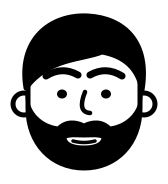

Black on white (tie in ink)
 Reversed on black
Reversed on blackOn yellow
On mid grey
Blur (squint test)
1-bit threshold
Lockup on black
Lockup on white

head 12864
46 (header)
32
icon 128
64
32
16
avatar
Single colour, reversal, on colour, blur, threshold, and small sizes.
Reversed on black
head 128